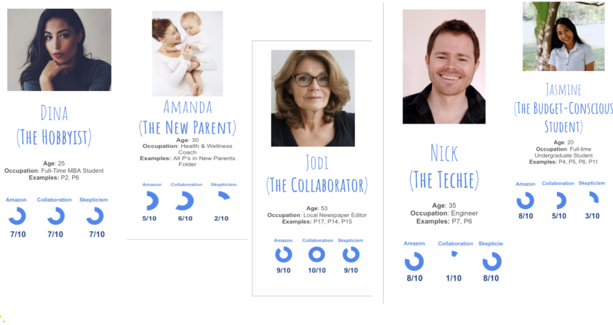

Overview
In this project, I explored how shoppers make sense of the wealth of available information while making online consumer decisions. This research was conducted for Skeema, a startup tool being developed by Niki Kittur’s sensemaking lab in CMU’s Human Computer Interaction Institute. Every day, people waste an average of 27 Wikipedia pages worth of effort trying to make sense of information on the Internet. Our ultimate goal was to understand more about how and why people spend so much time making sense of product information on the Internet, and to use our findings build a tool to reduce that time.
Method
To better understand our target users and their needs, I conducted two rounds of user interviews:
Round One: Understanding the shopping flow for target users
I began this project by recruiting research participants on the NextDoor app and using a survey to filter out target users. We expect that target users of our tool are people who have a very involved process while doing product research, and thus spend more time and energy doing this research than they would like. I filtered users based on whether they use spreadsheets to take notes when researching, and similar indicators that people use a very in-depth process when researching products. I then conducted interviews with these participants. All of the interviews began with questions to understand what kind of customers they were, and then I asked them to lead me through their process or shopping for something they were planning on shopping for soon. This gave insights into the shopping “flow” for target users, and how this flow varied according to certan variable characteristics.
Round Two: Understanding how target users use Amazon
From the first round of interviews, we noticed a lot of people were focusing on Amazon while shopping online. As a result, we decided it would be best for the tool to be a complement to Amazon, rather than a tool for any online shopping site. We decided to focus on Amazon shopping habits for the next round of interviews. I began with a survey to filter (a) people who use Amazon >80% of the tme and (b) people whose shopping habits seemed a good fit for our product. Participants were recruited using the NextDoor app. The structure of Round Two Interviews resembled that of Round One, where I observed their shopping flow; this time, however, all of the flows were on Amazon. I worked Amazon-specific questions into the Discussion Guide, and took notes of their pain points and loves with Amazon design and the Amazon experience to understand how our product would fit with it.
Personas
To encapsulate my findings over the two rounds of interviews, I revised the notes for each of our participants and tracked trends in characteristics and tendencies. I then created five personas to represent our users. I used metrics that differentiated users across their interviews, including an "Amazon" score that represents the likelihood to use Amazon, a "Collaboration" score that represents the likelihood to collaborate with someone else on shopping decisions (such as an S.O. or parent), and a "Skepticism" score that represents likelihood to trust information sources while making a shopping decision. Shown below are quick snapshots of these personas; click here to see their full profiles, which gives deep dives into shopping habits, pain points, appeal of the tool to her, and more.
Conclusions
Conducting these user interviews and creating these personas is an important step for the Skeema project. Specifically, these personas motivate the development of Skeema towards people with specific goals and interests for using the tool. With these personas in hand, the Skeema team can now develop and market the features that these personas prioritize.
Huge thank you to Niki Kittur, Julina Coupland, and Brad Breneisen for their guidance this summer!